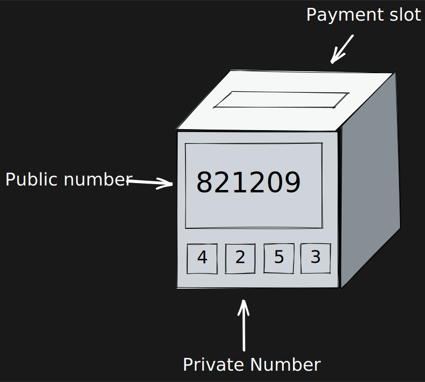

<!DOCTYPE html>
<html lang="en">
  <head>
    <meta charset="utf-8" />
    <meta name="viewport" content="width=device-width, initial-scale=1.0, maximum-scale=1.0, user-scalable=no" />

    <title>Bitcoin Slides</title>
    <link rel="stylesheet" href="dist/reveal.css" />
    <link rel="stylesheet" href="dist/theme/black.css" id="theme" />
    <link rel="stylesheet" href="plugin/highlight/zenburn.css" />
	<link rel="stylesheet" href="css/layout.css" />
	<link rel="stylesheet" href="plugin/customcontrols/style.css">


    <script defer src="dist/fontawesome/all.min.js"></script>

	<script type="text/javascript">
		var forgetPop = true;
		function onPopState(event) {
			if(forgetPop){
				forgetPop = false;
			} else {
				parent.postMessage(event.target.location.href, "app://obsidian.md");
			}
        }
		window.onpopstate = onPopState;
		window.onmessage = event => {
			if(event.data == "reload"){
				window.document.location.reload();
			}
			forgetPop = true;
		}

		function fitElements(){
			const itemsToFit = document.getElementsByClassName('fitText');
			for (const item in itemsToFit) {
				if (Object.hasOwnProperty.call(itemsToFit, item)) {
					var element = itemsToFit[item];
					fitElement(element,1, 1000);
					element.classList.remove('fitText');
				}
			}
		}

		function fitElement(element, start, end){

			let size = (end + start) / 2;
			element.style.fontSize = `${size}px`;

			if(Math.abs(start - end) < 1){
				while(element.scrollHeight > element.offsetHeight){
					size--;
					element.style.fontSize = `${size}px`;
				}
				return;
			}

			if(element.scrollHeight > element.offsetHeight){
				fitElement(element, start, size);
			} else {
				fitElement(element, size, end);
			}		
		}


		document.onreadystatechange = () => {
			fitElements();
			if (document.readyState === 'complete') {
				if (window.location.href.indexOf("?export") != -1){
					parent.postMessage(event.target.location.href, "app://obsidian.md");
				}
				if (window.location.href.indexOf("print-pdf") != -1){
					let stateCheck = setInterval(() => {
						clearInterval(stateCheck);
						window.print();
					}, 250);
				}
			}
	};


        </script>
  </head>
  <body>
    <div class="reveal">
      <div class="slides"><section  data-markdown><script type="text/template"><!-- .slide: class="drop" -->
<div class="" style="position: absolute; left: 0px; top: 0px; height: 700px; width: 960px; min-height: 700px; display: flex; flex-direction: column; align-items: center; justify-content: center" absolute="true">

# Cryptocurrency 101

### Bitcoin edition

Shane O'Neill<br>
ChainExplorer<br>
Bluehalo<br>
2023-01-18
</div></script></section><section  data-markdown><script type="text/template"><!-- .slide: class="drop" -->
<div class="" style="position: absolute; left: 0px; top: 0px; height: 700px; width: 960px; min-height: 700px; display: flex; flex-direction: column; align-items: center; justify-content: center" absolute="true">

# Why Bitcoin?

- The first one
- The most popular one
- The best for learning the fundamentals
- Lots of clones
	- Litecoin
	- Dogecoin
	- Zcash
</div></script></section><section  data-markdown><script type="text/template"><!-- .slide: class="drop" -->
<div class="" style="position: absolute; left: 0px; top: 0px; height: 700px; width: 960px; min-height: 700px; display: flex; flex-direction: column; align-items: center; justify-content: center" absolute="true">

# What is Bitcoin?

- "Bitcoin is software"
- "Bitcoin is a network of computers"
- "Bitcoin is decentralized consensus"
- "Bitcoin is money"
</div></script></section><section  data-markdown><script type="text/template"><!-- .slide: class="drop" -->
<div class="" style="position: absolute; left: 0px; top: 0px; height: 700px; width: 960px; min-height: 700px; display: flex; flex-direction: column; align-items: center; justify-content: center" absolute="true">

## "Bitcoin is Software"

- Bitcoin has a reference implementation called **Bitcoin Core**
- Easily runnable on consumer laptops
- Open Source
</div></script></section><section  data-markdown><script type="text/template"><!-- .slide: class="drop" -->
<div class="" style="position: absolute; left: 0px; top: 0px; height: 700px; width: 960px; min-height: 700px; display: flex; flex-direction: column; align-items: center; justify-content: center" absolute="true">

## "Bitcoin is the Network"

- Bitcoin uses Peer-to-Peer (P2P) technology to operate
- Bitcoin is comprised of Nodes running Software
- Each Node broadcasts messages to its neighbors
- Bitcoin has 5 classes of users
	- Miners
	- Merchants
	- Exchanges
	- Developers
	- Users
</div></script></section><section  data-markdown><script type="text/template"><!-- .slide: class="drop" -->
<div class="" style="position: absolute; left: 0px; top: 0px; height: 700px; width: 960px; min-height: 700px; display: flex; flex-direction: column; align-items: center; justify-content: center" absolute="true">

## "Bitcoin is the Network"

- 10k+ Nodes
- Open and permission-less
	- You can use Bitcoin for anything you want at any time
	- Want to send a payment at 2:00AM? Sure
	- Want to try to crash it? Go ahead
	- Want to make a start-up thats entire business model is powered by the Bitcoin network? A-OK
</div></script></section><section  data-markdown><script type="text/template"><!-- .slide: class="drop" -->
<div class="" style="position: absolute; left: 0px; top: 0px; height: 700px; width: 960px; min-height: 700px; display: flex; flex-direction: column; align-items: center; justify-content: center" absolute="true">

## "Bitcoin is Decentralized Consensus"

- Consensus means each Node arrives at the same conclusions as everyone else on network
	- Transaction A happened before Transaction B
	- D is invalid because C happened
	- We track events using a Blockchain
- Bitcoin Consensus is Proof of Work based
	- *more on this later regarding Mining*
</div></script></section><section  data-markdown><script type="text/template"><!-- .slide: class="drop" -->
<div class="" style="position: absolute; left: 0px; top: 0px; height: 700px; width: 960px; min-height: 700px; display: flex; flex-direction: column; align-items: center; justify-content: center" absolute="true">

# "Bitcoin is Money"

- lowercase "b"
	- 1 bitcoin
	- 10 bitcoin
- Immutable
- Censorship Resistant
- Borderless
</div></script></section><section  data-markdown><script type="text/template"><!-- .slide: class="drop" -->
<div class="" style="position: absolute; left: 0px; top: 0px; height: 700px; width: 960px; min-height: 700px; display: flex; flex-direction: column; align-items: center; justify-content: center" absolute="true">

### Public Boxes Analogy

- Imagine a central location in the community where payment "dropboxes" are located
- Each box has 
	- A one-way slot for payments
	- A public number
	- A private number that lets you open it
</div></script></section><section  data-markdown><script type="text/template"><!-- .slide: class="drop" -->
<div class="" style="position: absolute; left: 0px; top: 0px; height: 700px; width: 960px; min-height: 700px; display: flex; flex-direction: column; align-items: center; justify-content: center" absolute="true">


</div></script></section><section  data-markdown><script type="text/template"><!-- .slide: class="drop" -->
<div class="" style="position: absolute; left: 0px; top: 0px; height: 700px; width: 960px; min-height: 700px; display: flex; flex-direction: column; align-items: center; justify-content: center" absolute="true">


</div></script></section><section  data-markdown><script type="text/template"><!-- .slide: class="drop" -->
<div class="" style="position: absolute; left: 0px; top: 0px; height: 700px; width: 960px; min-height: 700px; display: flex; flex-direction: column; align-items: center; justify-content: center" absolute="true">


</div></script></section><section  data-markdown><script type="text/template"><!-- .slide: class="drop" -->
<div class="" style="position: absolute; left: 0px; top: 0px; height: 700px; width: 960px; min-height: 700px; display: flex; flex-direction: column; align-items: center; justify-content: center" absolute="true">

## Alice's Box

How does Alice pay for a book within this system?


</div></script></section><section  data-markdown><script type="text/template"><!-- .slide: class="drop" -->
<div class="" style="position: absolute; left: 0px; top: 0px; height: 700px; width: 960px; min-height: 700px; display: flex; flex-direction: column; align-items: center; justify-content: center" absolute="true">


</div></script></section><section  data-markdown><script type="text/template"><!-- .slide: class="drop" -->
<div class="" style="position: absolute; left: 0px; top: 0px; height: 700px; width: 960px; min-height: 700px; display: flex; flex-direction: column; align-items: center; justify-content: center" absolute="true">

## Alice pays Bob \\$15

- \\$20 out. \\$ 15 to Bob. \\$5 back to herself.
- \\$10 out. \\$9 out. \\$15 to Bob. \\$4 back to herself.

You always have to "spend" all of your inputs. Chunks of bitcoin are **indivisible**.

- Does Alice need to deposit her change back into the **821209** box?
</div></script></section><section  data-markdown><script type="text/template"><!-- .slide: class="drop" -->
<div class="" style="position: absolute; left: 0px; top: 0px; height: 700px; width: 960px; min-height: 700px; display: flex; flex-direction: column; align-items: center; justify-content: center" absolute="true">

## Transactions

- [1 input 2 outputs](https://54.224.244.20:8443/#/blockchain/bitcoin/blockNumber/764270/tx/ffd08cc8cb2a81c6181f683cf765ec8c12e1f0aa4c779be8b678674c232277b2)
- [2 inputs 2 outputs](https://54.224.244.20:8443/#/blockchain/bitcoin/blockNumber/764270/tx/fef93bd12f3620729b678b11bf7d5dcca6509368bdbee6c37a4c89fd61d3e0bb)
</div></script></section><section  data-markdown><script type="text/template"><!-- .slide: class="drop" -->
<div class="" style="position: absolute; left: 0px; top: 0px; height: 700px; width: 960px; min-height: 700px; display: flex; flex-direction: column; align-items: center; justify-content: center" absolute="true">

# Fees

- The small amount of bitcoin left on the table that the Miner can collect
- Every Transaction is imposing a burden on the thousands of Bitcoin nodes
- A Miner will only include your Transaction in the blockchain if the fee is high enough to offset the burden of inclusion
- Fee = (Total Input Value) - (Total Output Value)

```
+ 0.00219543 
+ 0.00265858 
- 0.00192305 
- 0.0029164
------------
0.00001456
```
</div></script></section><section  data-markdown><script type="text/template"><!-- .slide: class="drop" -->
<div class="" style="position: absolute; left: 0px; top: 0px; height: 700px; width: 960px; min-height: 700px; display: flex; flex-direction: column; align-items: center; justify-content: center" absolute="true">

## Addresses

`1PvA2kSDi1zXnvheoW6YBhbXC5z6xMUKvk`

1. Hash (Public Key)
2. Prefix address type i.e. 0, 5
3. Base58 the whole thing (with checksum)
	- No uppercase O, uppercase I, lowercase l

Native Segwit bech32 `bc1qh74urtva38elg0jl3ud4jlzvun0qh8lmsjgyuh`
</div></script></section><section  data-markdown><script type="text/template"><!-- .slide: class="drop" -->
<div class="" style="position: absolute; left: 0px; top: 0px; height: 700px; width: 960px; min-height: 700px; display: flex; flex-direction: column; align-items: center; justify-content: center" absolute="true">

### Addr: 1PvA2kSDi1zXnvheoW6YBhbXC5z6xMUKvk

Public Number

```
00101011010001100011001011010000100
00100100001011111111100011101111100
10110110110101010110111001110110101
11111010010001100110100011111010001
11000100011110100100010101110000011
10010101000011110100001111011111000
10011010001001011001010100100110101
000011100110111
```
</div></script></section><section  data-markdown><script type="text/template"><!-- .slide: class="drop" -->
<div class="" style="position: absolute; left: 0px; top: 0px; height: 700px; width: 960px; min-height: 700px; display: flex; flex-direction: column; align-items: center; justify-content: center" absolute="true">

Hash(PubKey)

`22cb2251d0159970b46e77feca036ae7e85960fb`
</div></script></section><section  data-markdown><script type="text/template"><!-- .slide: class="drop" -->
<div class="" style="position: absolute; left: 0px; top: 0px; height: 700px; width: 960px; min-height: 700px; display: flex; flex-direction: column; align-items: center; justify-content: center" absolute="true">

Base58Check(Pubkeyhash)

`1PvA2kSDi1zXnvheoW6YBhbXC5z6xMUKvk`
</div></script></section><section  data-markdown><script type="text/template"><!-- .slide: class="drop" -->
<div class="" style="position: absolute; left: 0px; top: 0px; height: 700px; width: 960px; min-height: 700px; display: flex; flex-direction: column; align-items: center; justify-content: center" absolute="true">

## Blockchains


</div></script></section><section  data-markdown><script type="text/template"><!-- .slide: class="drop" -->
<div class="" style="position: absolute; left: 0px; top: 0px; height: 700px; width: 960px; min-height: 700px; display: flex; flex-direction: column; align-items: center; justify-content: center" absolute="true">

## Blockchains

- The database convenient for decentralized consensus
- ~440GB as of 01/11/2023
- Constantly growing
- Each block references the previous block
- Consensus follows the longest chain
</div></script></section><section  data-markdown><script type="text/template"><!-- .slide: class="drop" -->
<div class="" style="position: absolute; left: 0px; top: 0px; height: 700px; width: 960px; min-height: 700px; display: flex; flex-direction: column; align-items: center; justify-content: center" absolute="true">

## Mining

**Anyone can make a block. No permissions is required by anyone**

Goal: Find **Proof of Work**

1. Hash of prev block header
2. Pick the Transactions shared with you
	1. The first Transaction is your coinbase transaction
3. Include the current target difficulty
4. Pick a random number called a **nonce**
5. Hash the above along with a random number called a nonce
6. If the Hash is good enough, broadcast the block to all neighbors
7. If not, repeat Steps 4, 5, and 6
</div></script></section><section  data-markdown><script type="text/template"><!-- .slide: class="drop" -->
<div class="" style="position: absolute; left: 0px; top: 0px; height: 700px; width: 960px; min-height: 700px; display: flex; flex-direction: column; align-items: center; justify-content: center" absolute="true">

# Proof of Work example

```
nonce: 0x719950c
transactions: 6e659a81ee4c3febb3979a6446d56ccc37f32404c7698e790f6d2cb4d5d4d242
difficulty: 0x17077ce2
version: 0x222d8000
```

Hashing the above produces:

`00000000000000000000051870f680c15311c692f71bb473ed8b3b1b0a4a152d`

Enough leading zeros to be under the difficulty target. An immense amount of compute was used to find the above **nonce**. Difficult to produce, easy to check.
</div></script></section><section  data-markdown><script type="text/template"><!-- .slide: class="drop" -->
<div class="" style="position: absolute; left: 0px; top: 0px; height: 700px; width: 960px; min-height: 700px; display: flex; flex-direction: column; align-items: center; justify-content: center" absolute="true">

## Attacks

- 51% Attacks (Various forms)
	1. I control 51% the Hash power of the network
	2. I can produce blocks faster than anyone else
	3. I then decide which transactions get included in blocks (if any)
	4. I can spend some bitcoin, then start mining on the previous block to "undo" the transaction
- Unfathomably expensive to maintain
- Cannot "undo" the entire blockchain
- Solution? Wait for 6 more blocks before doing anything.
</div></script></section><section  data-markdown><script type="text/template"><!-- .slide: class="drop" -->
<div class="" style="position: absolute; left: 0px; top: 0px; height: 700px; width: 960px; min-height: 700px; display: flex; flex-direction: column; align-items: center; justify-content: center" absolute="true">

## History

- Satoshi Nakamoto's last message was on December 12, 2010
- Coins never moved, never made any money from Bitcoin
- Bitcoincash forked at 478,558 (Aug 2017)

> "_The Times 03/Jan/2009_ Chancellor on brink of second bailout for banks" - Satoshi Nakamoto's Block 0 message.
</div></script></section></div>
    </div>

    <script src="dist/reveal.js"></script>

    <script src="plugin/markdown/markdown.js"></script>
    <script src="plugin/highlight/highlight.js"></script>
    <script src="plugin/zoom/zoom.js"></script>
    <script src="plugin/notes/notes.js"></script>
    <script src="plugin/math/math.js"></script>
	<script src="plugin/mermaid/mermaid.js"></script>
	<script src="plugin/chart/chart.min.js"></script>
	<script src="plugin/chart/plugin.js"></script>
	<script src="plugin/customcontrols/plugin.js"></script>

    <script>
      function extend() {
        var target = {};
        for (var i = 0; i < arguments.length; i++) {
          var source = arguments[i];
          for (var key in source) {
            if (source.hasOwnProperty(key)) {
              target[key] = source[key];
            }
          }
        }
        return target;
      }

	  function isLight(color) {
		let hex = color.replace('#', '');

		// convert #fff => #ffffff
		if(hex.length == 3){
			hex = `${hex[0]}${hex[0]}${hex[1]}${hex[1]}${hex[2]}${hex[2]}`;
		}

		const c_r = parseInt(hex.substr(0, 2), 16);
		const c_g = parseInt(hex.substr(2, 2), 16);
		const c_b = parseInt(hex.substr(4, 2), 16);
		const brightness = ((c_r * 299) + (c_g * 587) + (c_b * 114)) / 1000;
		return brightness > 155;
	}

	var bgColor = getComputedStyle(document.documentElement).getPropertyValue('--r-background-color').trim();
	var isLight = isLight(bgColor);

	if(isLight){
		document.body.classList.add('has-light-background');
	} else {
		document.body.classList.add('has-dark-background');
	}

      // default options to init reveal.js
      var defaultOptions = {
        controls: true,
        progress: true,
        history: true,
        center: true,
        transition: 'default', // none/fade/slide/convex/concave/zoom
        plugins: [
          RevealMarkdown,
          RevealHighlight,
          RevealZoom,
          RevealNotes,
          RevealMath.MathJax3,
		  RevealMermaid,
		  RevealChart,
		  RevealCustomControls,
        ],


    	allottedTime: 120 * 1000,

		mathjax3: {
			mathjax: 'plugin/math/mathjax/tex-mml-chtml.js',
		},
		markdown: {
		  gfm: true,
		  mangle: true,
		  pedantic: false,
		  smartLists: false,
		  smartypants: false,
		},

		mermaid: {
			theme: isLight ? 'default' : 'dark',
		},

		customcontrols: {
			controls: [
			]
		},
      };

      // options from URL query string
      var queryOptions = Reveal().getQueryHash() || {};

      var options = extend(defaultOptions, {"width":960,"height":700,"margin":0.04,"controls":true,"progress":true,"slideNumber":false,"transition":"slide","transitionSpeed":"default"}, queryOptions);
    </script>

    <script>
      Reveal.initialize(options);
    </script>
  </body>

  <!-- created with Advanced Slides -->
</html>
